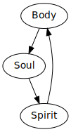

Many people are searching for purpose in life all the while they are missing what is right in front of them - the Holy Spirit.
Imagine that God has given you a house while you are living outside. You wouldn’t turn this down would you? God is saying “Instead of looking for peace from the world (cars, money, houses, spouses, tv, internet, pornography, etc.) run to me! I have given you my Spirit! You simply need to activate me”.
Titus 3
Titus was left in Crete to give leadership to the newly formed Churches and Paul is writing to him.
Titus 3:5. Good works are done in ourlives by the Holy Spirit’s inner working in our lives. See KJV version. Our salvation is by grace; not works.
Eph 5:25
John 13:10
He who has bathed need only to wash his feet. God provides a means by which we are cleansed daily. This talks about our confession of our sins, repentance of our hearts and resubmitting to the authority of Christ over our lives.
Christ cleanses us of sin.
Eph 2:2-3
“When you eat of that tree [dying] you shall die”
Eph 2:5

Human Spirit (oxygen) Holy Spirit (fuel) God’s Word (heat)
Mark 10:48;52
Jesus did this to show us that when we are dead to God we are blind. When the Holy Spirit enters us we can then see and thus follow Christ.
God does an extreme make over in us - like HGTV.
Titus 3:5 Romans 12:2
Eph 4:22-24
The more we push aside the old nature the more Christ can enter in us to fill the holes in our lives.
Georgia Muller - God had written Psalm 23 on his face.
2 Cor 3:18
Imagine you buy a house but it’s moldy and dark. Overtime you renovate it. In the same manner God does this. However, some people move in and not renovate because it costs to much. It’ll cost the lordship over their life and their heart.
Titus 3:6
You will never be living at your fullest potential. There is always more and more you can grow into in your walk with Christ.
Titus 3:6-7
We have tons of benefits being in Christ
The HS presents you with a new nature that has far reaching implications. Does that matter to you?
The Holy Spirit is the the key to unfolding all the riches of God has for the believer to experience while livng here on this earth. Have you activiated the divine riches God has for your life?